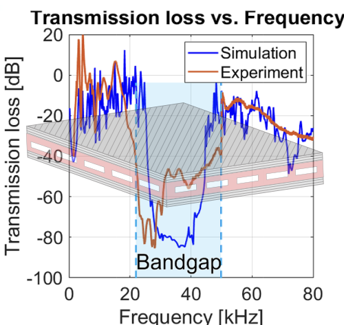

Design and Fabrication of Phononic Sandwich Composite Structures
Innovative integrated design and 4D printing for the development of phononic sandwich composite structures with tunable bandgap behavior
- Principal investigator
- Dr. Bekir Bediz (Sabancı University)
- Researchers
- Prof. Bahattin Koç (Sabancı University), Dr. Ali Fallah (Atılım University), Saeed Lotfan
- Advisor
- Dr. Kamer Kaya (Sabancı University)
Overview
This project focuses on the integrated design, analysis, and 4D printing of phononic sandwich composite structures with tunable bandgap behavior. The overall aim is to develop advanced structural concepts whose dynamic response can be tailored through geometry, material architecture, and smart design strategies.
The project combines design methodology, fabrication, and vibration-based performance evaluation to explore new possibilities for controllable wave propagation and vibration attenuation in engineered composite systems.